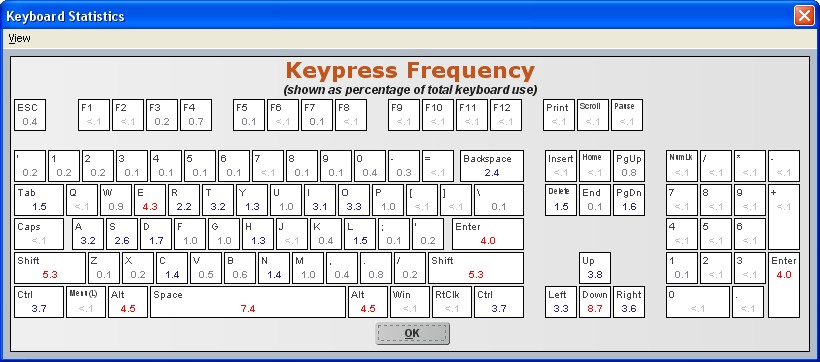

Each graph has context help that provides detailed insight into what the data means and how to use it. Where relevant, graphs also contain color-coded regions that allow you to identify where user data indicates high, moderate, or average risk.
UserInsight Reports are most useful for:
Individuals who want to understand how they use the computer, especially with respect to understanding the connection between their work patterns and their physical well-being
Ergonomists who want to understand an individual's risk so as to find the best behavioral solutions, workstation improvements, and changes to RSIGuard settings
Medical professionals who want to identify sources of problems and develop data-based corrective measures such as work restrictions
The UserInsight application is included in the RSIGuard installation package (so users can view their own data).
What can UserInsight help you see?
Often, you are reviewing a user's data with UserInsight when they have reported discomfort or an ergonomic issue, or you believe they are at a higher risk of injury. Therefore, your examination of the data will be specific to the situation. Here are some possible things you might look for:
Does the user consistently work a set number of hours, or do they have bursts of intense work sessions? Intense work sessions may lead to associated reports of discomfort.
Does the user's mouse/keyboard usage show patterns of increasing or decreasing that might indicate a corresponding increase or decrease in risk?
Are there patterns of high-risk usage that periodically arise (e.g., high usage levels, low rest compliance levels)? What do they correspond to (e.g., deadlines, end-of-month, etc.)?
Are there unusually high strain levels occasionally that might lead to periodic discomfort? Can you determine what is responsible for the peaks (e.g., usage of certain applications, deadlines)? Can these be mitigated with AutoClick, KeyControl, or other measures?
Does the user use AutoClick consistently? If high mouse strain values correspond inversely with AutoClick usage, encourage the user to more consistently use AutoClick.
Does the time off the computer account for a small percentage of the total work day (end of day - start of day)? If so, it implies that the user's computer exposure is more concentrated and less broken up by significant non-computer-related activities -- a possible risk factor.
What does the user's break pattern look like? Do they skip many breaks? If so, discuss adjusting BreakTimer's enforcement setting (Willpower), or making breaks more palatable by adding BreakTimer filters or adjusting other settings. Do they take many BreakTimer-suggested and natural breaks? If the number of breaks taken is small, they should have correspondingly low strain levels. If not, they may need BreakTimer to suggest more breaks (i.e., you should adjust their break settings to give more frequent and/or longer breaks).
Does the user consistently pause for ForgetMeNots Microbreaks? If not, ask the user why. Do they feel they can't break away from computer tasks? Work with them to resolve this unhealthy pattern.
Does the user consistently postpone breaks? If so, determine why and work to change this pattern.
The Keypress Force Estimate is relative for each keyboard. So for this statistic, look to see if the graph has peaks, possibly indicating stressful periods. Do these periods correspond to longer work hours? Do they correspond to reports of discomfort?
Look at raw statistics like mouse movement, total number of clicks or keypresses to give users another sense of how much they use the computer.
Compare manual and KeyControl drag and drops. If users experience mouse-related discomfort, show them how to use KeyControl to create a hotkey to dramatically reduce the strain associated with drag and drop/selection operations.
Look at number of typing corrections as a possible indication of fatigue. Does the number of corrections more than proportionally increase after extended periods of intense work? If so, this may help an employee (or a manager) see the wisdom in taking more breaks or working fewer hours on the computer.
Does the user use certain keys exceptionally frequently? For example, if a user reports pinky discomfort and heavily uses either the Tab or Backspace key, consider using KeyControl to move these keys to a more comfortable location (e.g., swapping Tab and Q, or Backspace and ]) using KeyControl hotkeys or a keyboard better designed for their usage.
Additional Resources:
The DataLogger Analysis whitepaper discusses each statistic in detail and offers other ideas of how you can interpret UserInsight information.
This sample shows 1 month of data. The dashed lines show actual values (raw data) for each day, whereas the smoothed lines show trends in the values.
This sample shows 3 months of data. In this example, only the smoothed data is shown and the graph area is larger to allow better viewing of subtle changes in data.
The mouse is hovering over the context help button, so the context help shows to explain this graph.
This sample shows smaller graphs for a 2-week period. Only raw data is shown to allow for easy viewing of actual data values.
Note that in the top-right graph, because the mouse is positioned over this graph, the tool shows the actual values of data for the day being pointed to by the mouse.

This sample shows detailed key usage information. Each key shows how often that key is used as a percentage of all keystrokes.